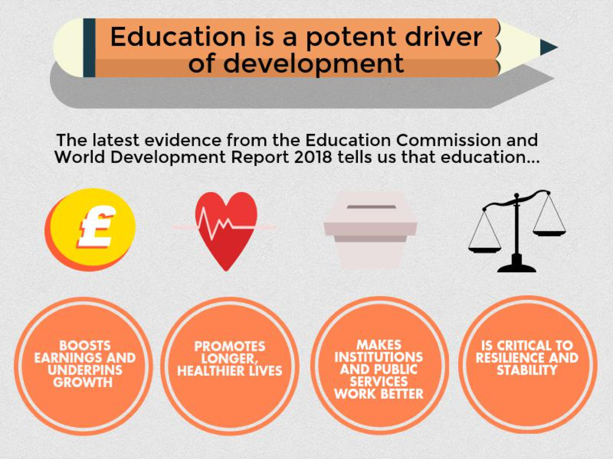

Policy challenges inglobal education
- 1) Education – a driver of development
- 2) Policy challenges
1) Education – a driver of development
Prosperity
Declining extreme poverty
Economic Growth
Accross countries we see: countries in which the population is better educated tend to be richer.
Economic Growth
Association between test scores and long-run economic growth after controlling for baseline GDP and years of schooling – Hanushek and Woessmann (2010)

Health
Health
Child mortality has been declining in all regions of the world. Why?
The link between education and health.The available evidence suggests women’s education leads to lower child mortality because it contributes towards healthier habits and choices

The link between education and health

The link between education and health

The link between education and health
Health
This chart shows the strong correlation between child mortality and educational attainment, across countries and time.
Democracy and stability
Political Freedom.
Political Freedom
Democracy and stability
Education is considered a key determinant of democratic political institutions, both because it promotes political participation at the individual level, and because it fosters a collective sense of civic duty.This chart shows that countries with higher educational attainment in the past are more likely to have democratic political regimes today. Here you can read more about the evidence.
Policy Challenges
Global Education – Table of Contents
- Overview: Policy challenges in global education (extra)
- #1 – Demographic and social context of demand for education
- #2 – Child violence and maltreatment
- #3 – Teacher performance and compensation
- #4 – Accountability
- #5 – Early childhood
- #6 – Evidence gaps
- Learning outcomes (extra)
1) Cross-country population by school age
(historical estimates and projections)
Since 1950 the global number of children younger than 15 years of age increased rapidly, from 0.87 billion children to 1.93 billion in 2015. As the population of children in school-age more than doubled the demand for education increased rapidly.
But the global demography is changing rapidly. Until the mid-1960s the global total fertility rate was 5 children per woman. Since then the fertility rate has halved globally.
Across countries we see that fertility rates are high where women have little access to education. Women's access to education is one very important driver of lower fertility rates. Our World in Data reviews the empirical and theoretical literature on the drivers of changing fertility here.
This relationship we also find over time. As the education of women improved, fertility rates declined.
This visualization shows the same data as the previous slides, but with the 22 territories highlighted on which DFID is focussed in particular.

And within those countries in which fertility rates remain high today, we again see the same stong relationship between better education and lower fertility rates.In countries with high fertility rates the issue is that only a very small minority of women has access to higher education.
Since 1950 the global number of children younger than 15 years of age increased rapidly, from 0.87 billion children to 1.96 billion today. But with much lower fertility, the UN expects the number of children to peak in 2057 at 2.094 billion children and by the end of the century the number of children is projected to be at 1.97 billion, just the same as today.
The distribution of children will however change: This chart shows how the UN projections for the number of school-age-children break down by world regions. Asia had to provide for a population of under-15-year-olds that doubled in size in less than 50 years, but over the coming decades this population will decrease in size. In the future, Africa is projected to see a very large increase of school-age-children. Not quite as large as the increase in Asia, but still almost a doubling until the end of the century. How this will turn out however will depend substantially on how successfully women are given access to education on the African continent in the short run. On a global scale the challenges for education in the last century were very different from the challenges ahead.

The demographers at IIASA are producing global demographic projections in which the various scenarios differ in how rapdily global education can be improved. As this visualization shows, the impact of different assumptions about education expansion are very large: The faster education can be made available, the faster the world will see a slow-down in population growth. Reasonable scenarios can make a difference of almost 1 billion people as early as 2060. All details can be found in the authors' publication in Science.
Africa is the continent where the UN and IIASA demographers differ most substantially. The UN projects a population of 4.5 billion in Africa in 2100 – see this visualization. The IIASA researchers, whose projection is shown here on the left, on the other hand project an end of rapid population growth in Africa by the end of the century when the population will reach 2.6 billion people. A difference of almost 2 billion people.
And equally the size of the school-age-population in Africa in the long-run will very much depend on how rapidly education to women can be expanded in the short run. A fast expansion of education is projected to lead to half the size of the under-15-year-old population as compared to a stagnation at the current enrollment rates.
InequalitiesTeacher absenteeismTeacher qualificationsViolence at schoolFinancing of education
Inequalities
Inequalities in youth literacy rates, Pakistan – UNESCO UIS GEM

In many countries, such as Pakistan, there are huge inequalities in education. This chart shows inequalities in youth literacy across many dimensions, including wealth, gender and geographic location. These data visualizations can be accessed here.
Teacher absenteeism
Random spot checks in schools across several African countries reveal that a large share of teachers are absent from schools.
Teacher absenteeism
...and even when they are in the schools, teachers are often absent from the classrooms.
Teacher absenteeism
...which means a substantial part of scheduled teaching time is effectively lost.
Teacher qualifications
In many countries only a relatively low share of teachers are qualified to teach. In terms of training, the available data suggests similarly large gaps: this scatter plot shows the share of trained vs qualified teachers across countries.
Violent discipline at school
Violent discipline in schools, in the form of corporal punishment, remains a very common practice. And violent discipline at home is also very common in many countries.
Expenditure and performance
Average reading performance in PISA and average spending per student from the age of 6 to 15 – OECD (2012)

This chart shows the correlation between expenditure per pupil and test scores (PISA reading performance). While there is a positive correlation across non-rich countries, the overall pattern shows that expenditure on education is not, in itself, a good predictor of education quality. Figuring out what works to deliver better education outcomes is an important challenge.
Percentage distribution of estimated effect of selected key resources on student performance – Glewwe and Kremer (2006)

Evidence suggests improving teacher quality is often more effective to improve learning outcomes than increasing the number of teachers per pupil. In fact, Chetty et al. (2014) find evidence suggesting that not only does the entry of a high quality teacher improve the results of students, the presence of ‘bad teachers’ negatively impacts student performance.
Summary of treatment effects from the Teacher Community Assistant Initiative (TCAI) in Ghana – IPA (2014)

However, evidence suggests that improving the quality of teachers is a necessary but insufficient condition to improving student learning in contexts where there are other binding coinstraints. For example, systems that require teaching an overambitious curriculum are likely to fail independently of teacher skills. This chart summarizes the effects of four different policy treatments within the so-called Teacher Community Assistant Initiative (TCAI) in Ghana. The first two sets of estimates correspond to the test-score impacts of enabling community assistants to provide remedial instruction specifically to low-performing children. These results are consistent with findings from across Africa, suggesting that teaching at the right level causes better learning outcomes in a cost-effective way.
Global Education – Table of Contents
- Overview: Policy challenges in global education (extra)
- #1 – Demographic and social context of demand for education
- #2 – Child violence and maltreatment
- #3 – Teacher performance and compensation
- #4 – Accountability
- #5 – Early childhood
- #6 – Evidence gaps
- Learning outcomes (extra)